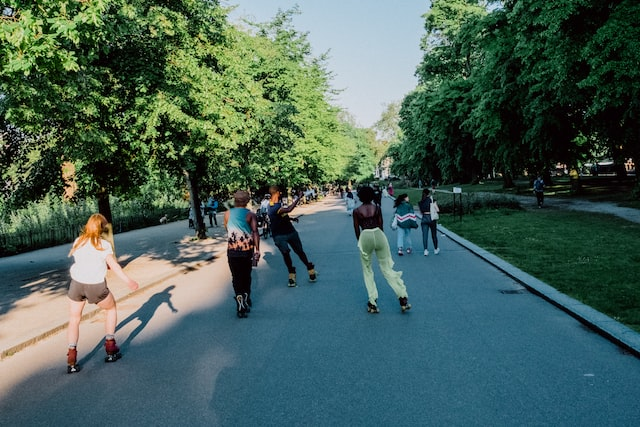

Roller skates, are shoes or bindings that fit onto shoes that are worn to enable the wearer to roll along on wheels. The first roller skate was an inline skate design, effectively an ice skate with wheels replacing the blade. Later the "quad skate" style became more popular, consisting of four wheels arranged in the same configuration as a typical car.

Roller skating is a hobby, sport, and mode of transportation using roller skates.
References
- Foot and ankle sports orthopaedics. Valderrabano, Victor,, Easley, Mark E. Cham, Switzerland. 21 February 2017. ISBN 978-3319157344. OCLC 972330993.
- Wilson, David Gordon (2004). Bicycling Science, 3rd Edition. MIT Press.
- "The Victorian craze that sparked a mini-sexual revolution", BBC News, 6 April 2015
- "Article: Roller Skating Being Considered for Olympics @ SkateMall.com". Archived from the original on 2011-07-16.
- Spellings, Sarah (July 2, 2020). "There's a Worldwide Shortage of Roller Skates". Vogue. Retrieved October 20, 2020.
- Conlon, Scarlett (2021-01-08). "Roller skating is having a revival, but whatever you do don't call it a trend". Harper's BAZAAR. Retrieved 2021-03-30.
- "Roller Skating Association International All About Roller Skatin".